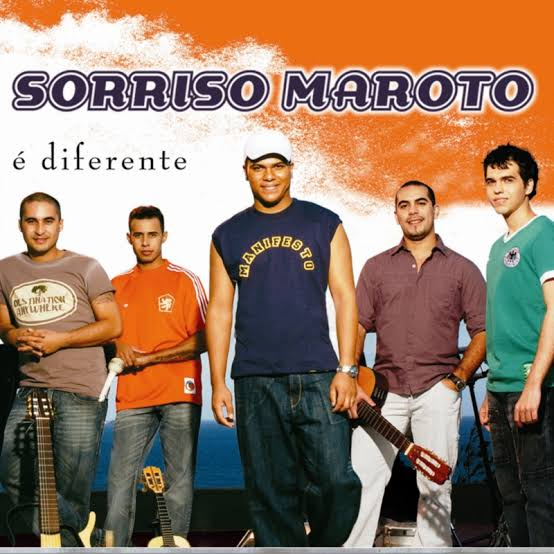

A banda Sorriso Maroto foi formada em 1997 e desde então tem encantado o público com suas músicas românticas e animadas. A formação original incluiu Bruno Cardoso (vocalista), Cris Oliveira (percussão), Sérgio Jr (violão), Vinícius Augusto (teclado) e Fred Araújo (surdo). Ao longo dos anos, a banda passou por algumas mudanças de membros, mas Bruno Cardoso sempre foi uma figura central. O estilo da banda é escrito por letras românticas e melodias envolventes. O pagode de Sorriso Maroto é projetado por arranjos sofisticados e uma produção cuidada, o que atrai um público diversificado. As influências do samba e da MPB também são notáveis, contribuindo para a originalidade do som da banda. Sorriso Maroto é uma das bandas mais influentes do pagode moderno, ajudando a popularizar o gênero e trazendo novos fãs para a cena musical. Sua música é frequentemente tocada em festas, shows e eventos.
Algumas músicas que marcaram nossa carreira: A banda se formou em 1997 e lançou seu primeiro álbum autointitulado em 1999, que trouxe a música "Já era", começando sua trajetória de sucesso. O álbum "Sorriso Maroto Ao Vivo" consolidou uma banda no cenário do pagode, com grandes sucessos como "Estrela Maoir". As apresentações ao vivo fizeram-se um marco, destacando sua habilidade de se conectar. A banda se apresentou em festivais e eventos importantes, como o Carnaval carioca, e fez participações especiais no programa. Sorriso Maroto fez parcerias com vários artistas nacionais. Músicas que marcam sua trajetória musical:
Os ingressos podem ser adquiridos em nosso site oficial ou nos pontos de venda.